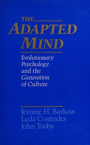

The Adapted Mind: Evolutionary Psychology and the Generation of Culture
Book·Jerome Barkow, Leda Cosmides, John Tooby, 1992·适应的心智

A foundational collection of essays in evolutionary psychology.
- Author
- Jerome Barkow, Leda Cosmides, John Tooby
- Year
- 1992
- Difficulty
- Advanced
- Kind
- Primary text
- Schools
- Evolutionary Psychology
- Core theories
- Cheater-Detection Module
Editions
- English edition The Adapted Mind: Evolutionary Psychology and the Generation of Culture Jerome H. Barkow, Leda Cosmides, John Tooby · Oxford University Press, first edition · 1992 Open Library ↗